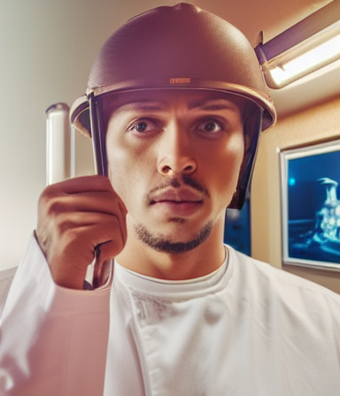
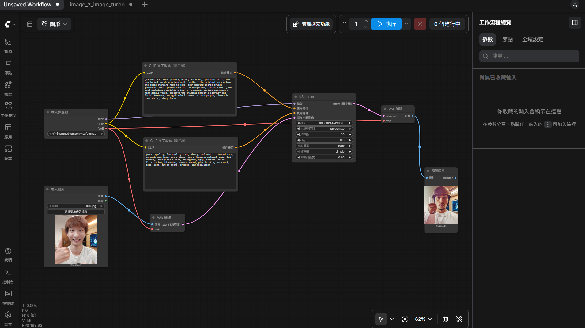

原圖
生成的圖

完整工作流截圖

正提示詞
(masterpiece, best quality, highly detailed), photorealistic, two men locked inside a prison cell together, the original person from the photo standing next to Toyz, both wearing orange prison jumpsuits, metal prison bars in the foreground, concrete walls, dim cold lighting, realistic prison environment, serious expressions, high detail faces, preserve the original person's identity and facial fea
反提示詞
(worst quality, low quality:1.4), blurry, deformed, distorted face, asymmetrical face, extra limbs, extra fingers, mutated hands, bad anatomy, poorly drawn face, disfigured, ugly, cartoon, anime, illustration, 3d render, oversaturated, plastic skin, watermark, text, logo, out of frame, cropped, low resolution
這次用ComfyUI生成圖片真的學到不少東西。一開始最大的問題就是模型沒裝好，一直跳出缺少檢查點的錯誤，後來才知道要自己下載v1-5的模型，那個checkpoints資料夾也藏很深，Desktop版的說明選單也沒有直接開啟資料夾的選項。Denoise調太低幾乎沒變化，調太高又容易變臉，大概0.45到0.6之間比較剛好。提示詞也要用英文寫才比較準。